Load the event
Drag in PowerPoint and PDF files or link a folder. Reorder cues, keep separate events, and lock the layout before the show.
Live presentation control
Load the whole event into one desk. Put slides and speaker notes on separate screens. Start with a click and GO, or press a key on your Elgato Stream Deck XL.
Windows 10/11 x64 · macOS 13+ · Elgato plugin included
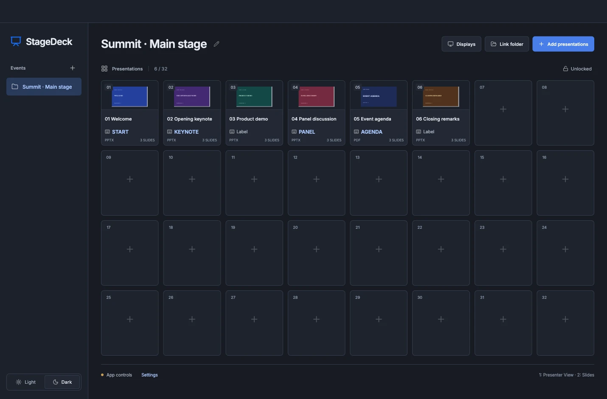
At the control desk
Drag in PowerPoint and PDF files or link a folder. Reorder cues, keep separate events, and lock the layout before the show.
Identify up to three displays. Choose Controls only, PowerPoint Presenter View, or audience Slides for each. Reuse a role on multiple screens.
A click selects the cue. GO starts it. The red LIVE state shows the active presentation, with slide navigation and a separate Close button.
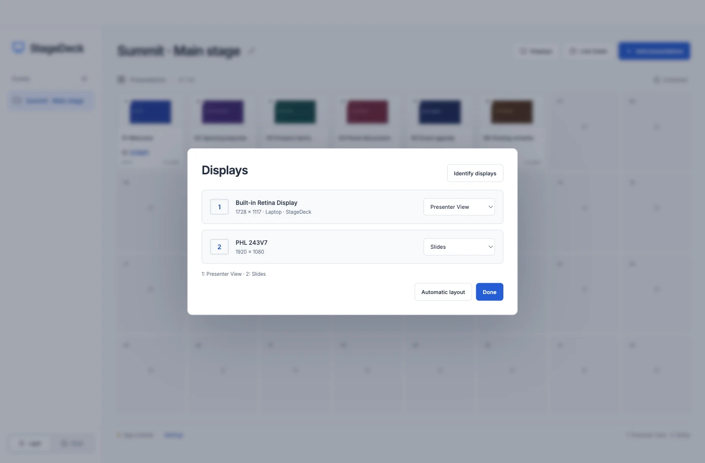
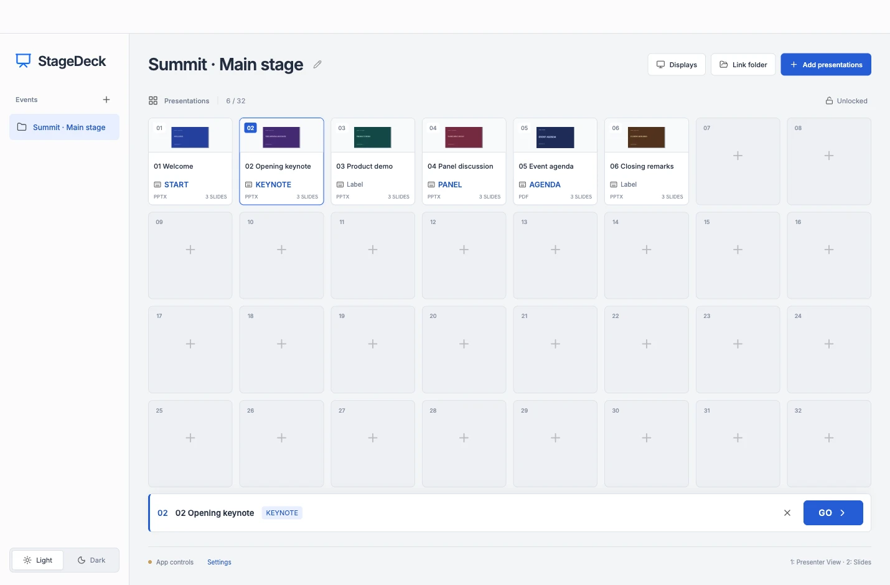
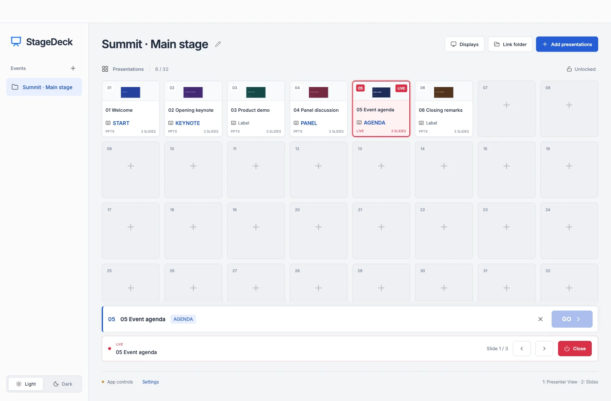
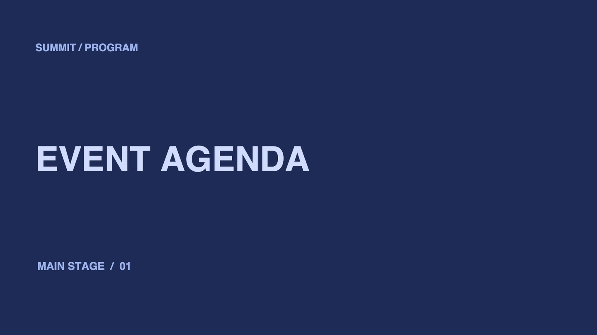
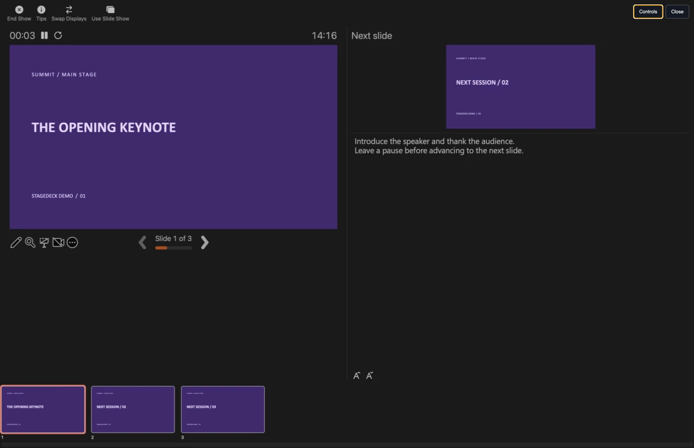
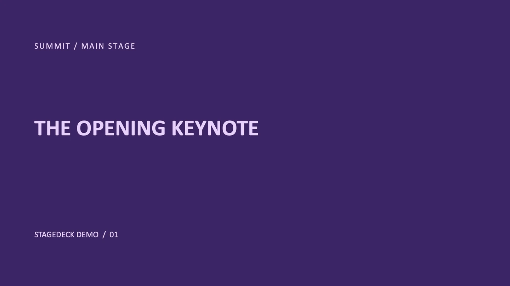
Elgato Stream Deck XL
Install the bundled plugin and select the 32-key XL profile. Press a key once to start the presentation and again to close it. Live keys turn red. Keep a full name in StageDeck and put a larger, shorter label on the key.
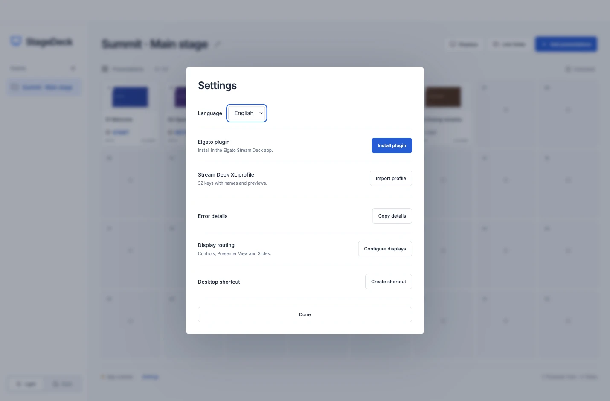
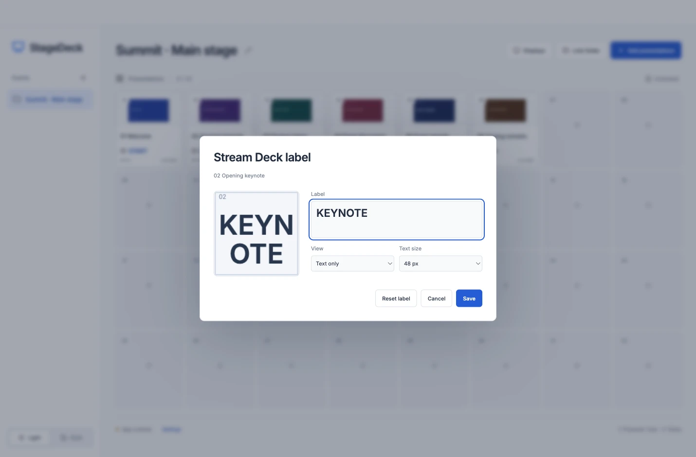
English and dark mode are the defaults. Switch to Serbian under Settings or choose Light in the sidebar. Presentation names and custom key labels stay as you wrote them.
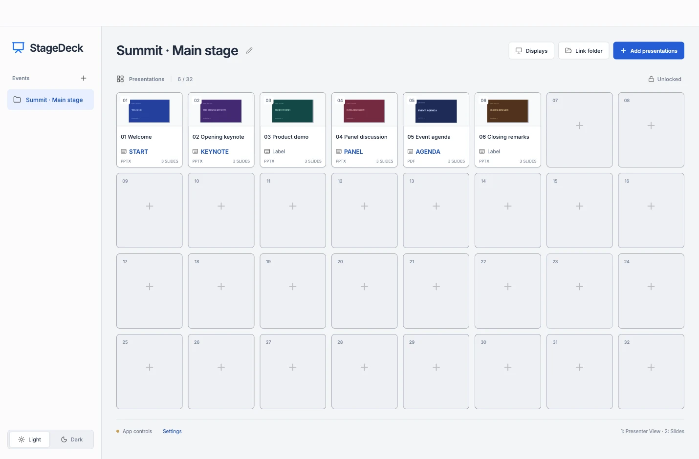
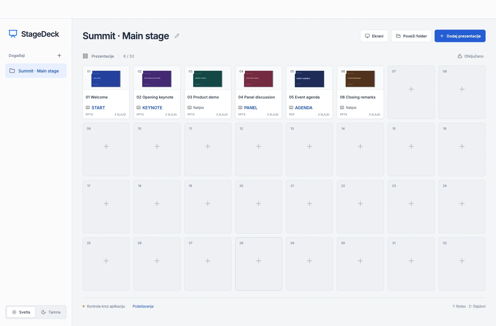
No. Select a presentation in StageDeck and click GO. The Stream Deck XL plugin is optional.
The desktop PowerPoint app is required for PowerPoint files and native Presenter View. StageDeck renders PDFs without Office.
Yes. Set the presenter display to Presenter View and the audience display to Slides. A third display can stay controls only. The roles are assigned per display and persist between launches.
No. StageDeck opens the files locally. Stream Deck communication and PowerPoint output stay on the computer.
Each ZIP contains the app installer, the Elgato plugin, and the 32-key XL profile. Follow the included Start Here guide for platform requirements and Mac permissions.